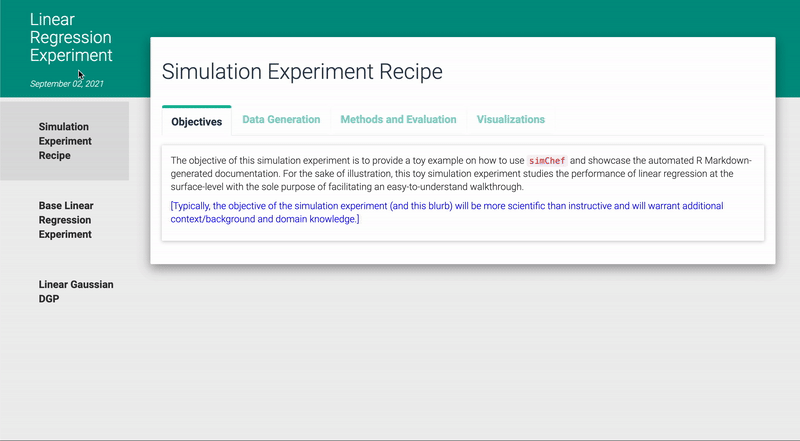

simChef!simChef helps you to cook up the code necessary to create a fully-realized, high-quality, reproducible, and transparently documented simulation experiment.
simChef is under active development. To install the package directly from GitHub, please use:
devtools::install_github("Yu-Group/simChef")In their 2020 paper “Veridical Data Science”, Yu and Kumbier propose the predictability, computability, and stability (PCS) framework, a workflow and documentation for “responsible, reliable, reproducible, and transparent results across the data science life cycle”. Under the umbrella of the PCS framework, we began the process of deriving a set of guidelines tailored specifically for simulation experiments, inspired by both high-quality simulation experiments from the literature and our own experiments to examine the statistical properties of methods within the PCS framework.
In creating our own experiments, we soon found that no existing R package could fully satisfy our developing requirements. simChef is our attempt to provide both a testbed and a computational home for the ongoing development of the PCS simulation guidelines, an intuitive recipe for veridical simulation experiments. We believe these tools will be useful for anyone intending to create their own simulation experiments in R.
Let’s use the components of a high-quality meal as analogies for a high-quality simulation experiment:
simChef lowers the difficulty of creating realistic simulation scenarios and makes incorporating real data a breeze.simChef takes care of the details of running your experiments across the potentially large number of data and model perturbations you care about so that you can focus on your scientific question.simChef won’t cook a good simulation experiment for you, but it will get you there with less effort and higher-quality presentation while helping you follow best-practice guidelines with minimal effort on your part. No sharpening required!simChef runs equally well on your laptop as on a high-performance computing cluster.simChef provides tools to turn your simulation experiment results into effective displays of quantitative information which are populated within preset and customizable R Markdown templates.When we designed the API for simChef, we placed a strong emphasis on creating a meaningful API that would enable an intuitive grammar of simulation experiments. For example, the following creates an experiment, adds data-generating processes and a method, adds parameters of the data-generating process and method to vary across, and finally runs the experiment.
experiment <- create_experiment() %>%
add_dgp(dgp1) %>%
add_dgp(dgp2) %>%
add_method(method1) %>%
add_vary_across(
dgp = dgp1,
n = c(100, 1000, 10000)
) %>%
add_vary_across(
method = method1,
lambda = c(0.1, 0.5, 1.0)
)
results <- experiment %>%
run_experiment()For more details, run vignette("simChef").
In addition to the intuitive and simple grammar, we have made visualizing the simulation experiment’s results as easy as possible. With the following line of code, the simulation experiment’s results are automatically populated into a beautiful and clickable html file (generated via R Markdown). The hope is to encourage proper documentation of the simulation experiment and to lighten the load when it comes to interpreting the results of the simulation experiment.
create_rmd(experiment)
future.